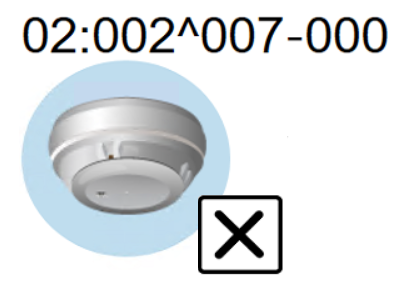

Graphical Viewer and Fire Symbols
Graphics Viewer
The Graphics Viewer allows you to view the graphics representing your facility or equipment. It is where you can change the current state of an object’s properties from a graphic, by using the floating Status and Commands window. You can filter your view of a graphic by discipline, section, or you can zoom in and out for greater detail or for a birds-eye overview.
The Graphics Viewer can be accessed by selecting Application View in System Browser. Project graphics are listed in the root of the Applications > Graphics tree and can be opened by clicking on any one of the actual graphics. The Graphics Viewer displays in the Default tab of either the Primary or Secondary pane. If you have the appropriate security access, you can access the Graphics Editor from the Graphics Viewer.
Fire Symbols

Detectors and other fire devices are represented on graphics by graphical symbols, which can communicate the following information:
- A static image represents the type of object.
- A circular background shows in color when an alarm occurs on the object, and it blinks when the alarm needs to be acknowledged. The color is associated to the event category as in the Summary bar and Event List.
- A dotted background displays when the communication with the fire panel is down and the system cannot determine and show the condition of the object.
- An X modifier shows in the symbol to represent a disarmed (excluded or isolated) condition.
- On top, the technical address may appear to provide the exact object identification in the hardware structure.